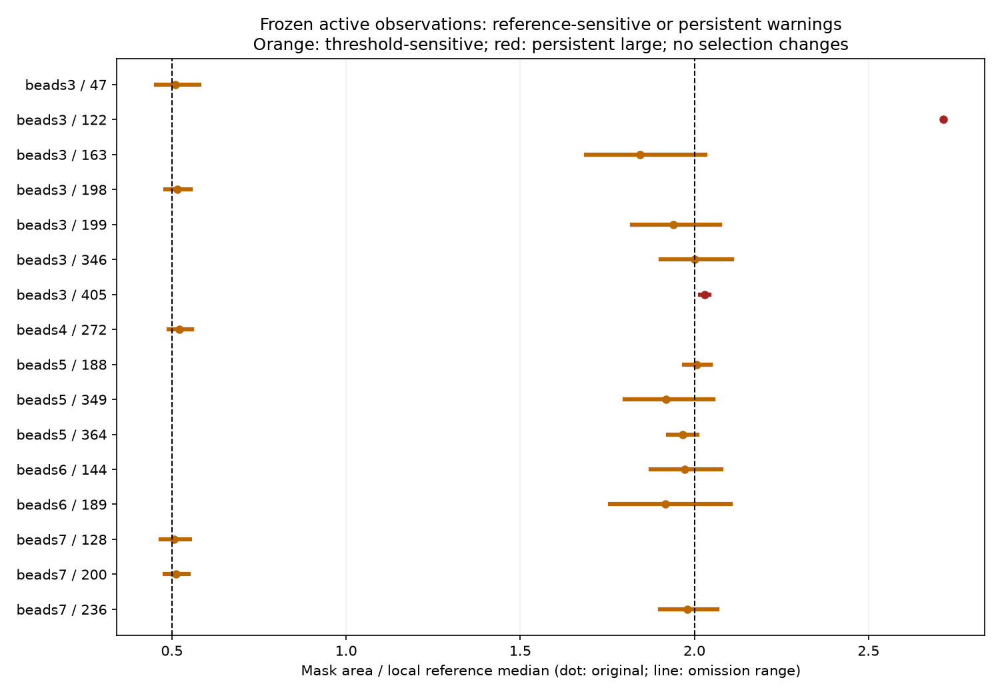
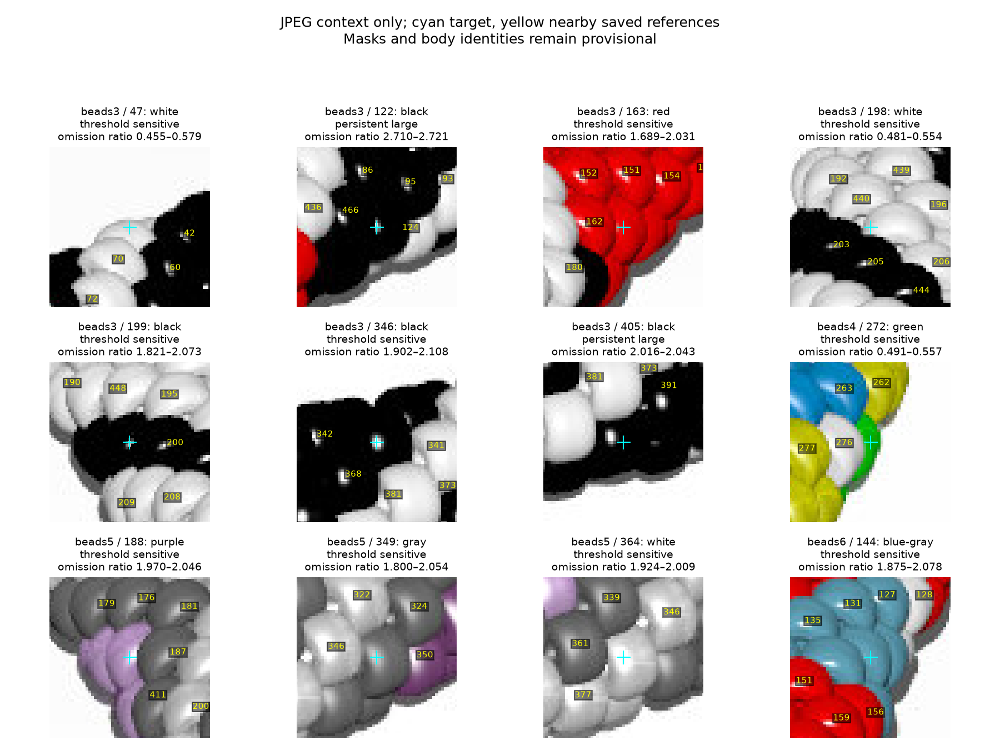
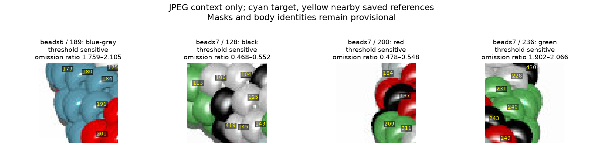

Only active observations are targets. Original reference pools include later area-excluded candidates. Omit one saved reference at a time without replacement; minimum four references, small <0.5, large >2. Equality is ordinary. This is a sensitivity audit, not a confidence interval or completeness test. No mask, selection or body decision changes.
Queue omission trials and image summaries · All active observations · Queue CSV · Source hashes

| Image / ID | Category | Original ratio | Omission range | Trial states |
|---|---|---|---|---|
| beads3 / 47 | threshold_sensitive | 0.509275 | 0.454819–0.578544 | {'ordinary': 4, 'small': 4} |
| beads3 / 122 | persistent_large | 2.715706 | 2.710317–2.721116 | {'large': 8} |
| beads3 / 163 | threshold_sensitive | 1.844523 | 1.689320–2.031128 | {'ordinary': 4, 'large': 4} |
| beads3 / 198 | threshold_sensitive | 0.514706 | 0.480769–0.553797 | {'small': 4, 'ordinary': 4} |
| beads3 / 199 | threshold_sensitive | 1.938776 | 1.821086–2.072727 | {'ordinary': 4, 'large': 4} |
| beads3 / 346 | threshold_sensitive | 2.000000 | 1.902439–2.108108 | {'large': 4, 'ordinary': 4} |
| beads3 / 405 | persistent_large | 2.029610 | 2.016043–2.043360 | {'large': 8} |
| beads4 / 272 | threshold_sensitive | 0.522152 | 0.491071–0.557432 | {'small': 4, 'ordinary': 4} |
| beads5 / 188 | threshold_sensitive | 2.007519 | 1.970480–2.045977 | {'large': 4, 'ordinary': 4} |
| beads5 / 349 | threshold_sensitive | 1.918654 | 1.800000–2.054054 | {'ordinary': 4, 'large': 4} |
| beads5 / 364 | threshold_sensitive | 1.965567 | 1.924157–2.008798 | {'ordinary': 4, 'large': 4} |
| beads6 / 144 | threshold_sensitive | 1.971681 | 1.875421–2.078358 | {'ordinary': 4, 'large': 4} |
| beads6 / 189 | threshold_sensitive | 1.916185 | 1.758621–2.104762 | {'ordinary': 4, 'large': 4} |
| beads7 / 128 | threshold_sensitive | 0.506631 | 0.468137–0.552023 | {'ordinary': 4, 'small': 4} |
| beads7 / 200 | threshold_sensitive | 0.510779 | 0.478261–0.548043 | {'ordinary': 4, 'small': 4} |
| beads7 / 236 | threshold_sensitive | 1.980276 | 1.901515–2.065844 | {'ordinary': 4, 'large': 4} |


Beads3 122/405 and beads5 188 remain unresolved even if a numerical warning changes. Same-color borders, pale/shadow separation, colors, beads7 manual glint repairs and inventory completeness remain provisional. No new maker questions; saved R069 sliver exclusions still apply.